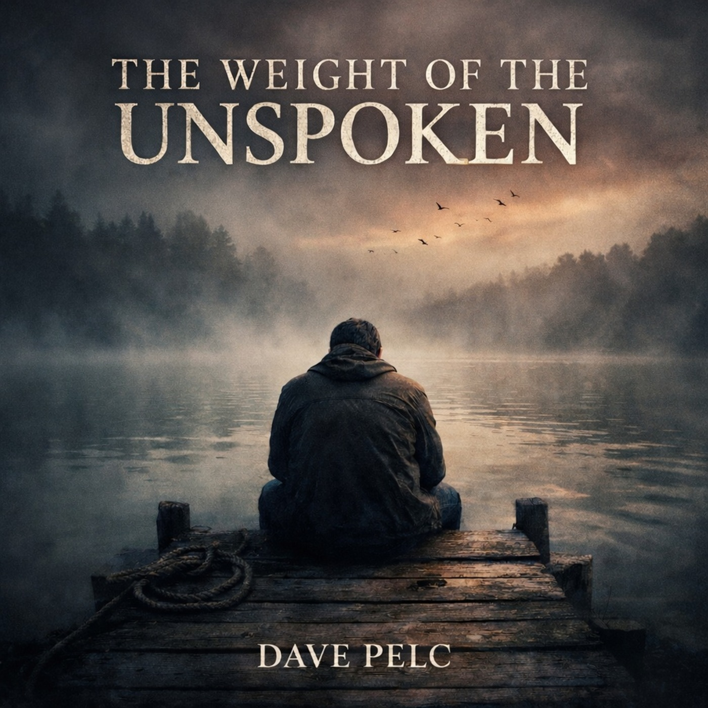
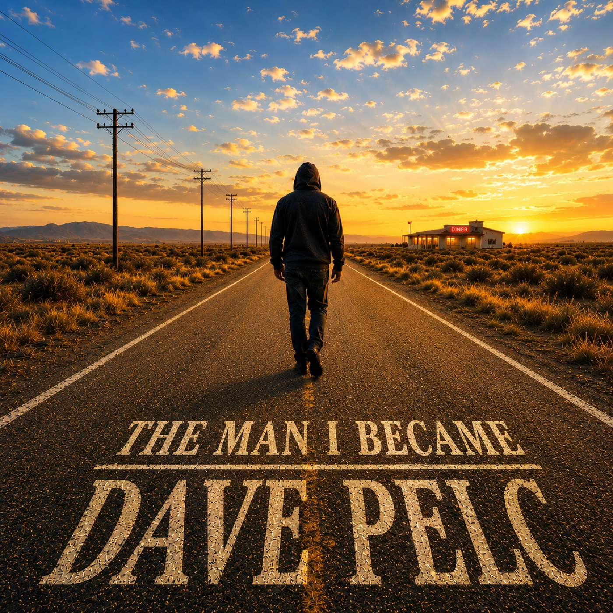

He didn't set out to be a musician — he just needed somewhere to put what he couldn't say out loud. Real years, real scars, nothing invented.
Dave Pelc didn't start as a musician. He started as a man with too much going on inside and nowhere safe to put it — years of unsent messages and raw confessions, written for the people who stayed, the ones who left, and the ones he never found the right moment to reach.
Those words became The Weight of the Unspoken, a debut built on slow rock blues — heavy, honest, carved from the people who left their mark on him, the ones who stayed and the ones who didn't.
The Man I Became picks up where that album left off. Not the falling apart, but the slower work of getting back up — eighteen songs written across the hardest stretch of his life, sitting with the man left standing in the wreckage and what he decided to do next. Sixty years of living went into it. Nothing on the record was invented.
Across both albums, the foundation is blues — though it doesn't stay fenced in by it. There's a touch of alt rock woven through, and somewhere along the way the sound started drifting toward something he calls symphony blues: cello, viola, and flute stepping out of the background and into the lead. The rest is easier to hear than explain — so listen and decide for yourself.
Whether the story continues is a question he's in no rush to answer. But the door is open, and so is he.

Years of unsent letters and raw confessions, finally given a home — built entirely from the connections that shaped him.

Not the falling apart, but the slower work of getting back up — eighteen songs from the hardest stretch of his life.